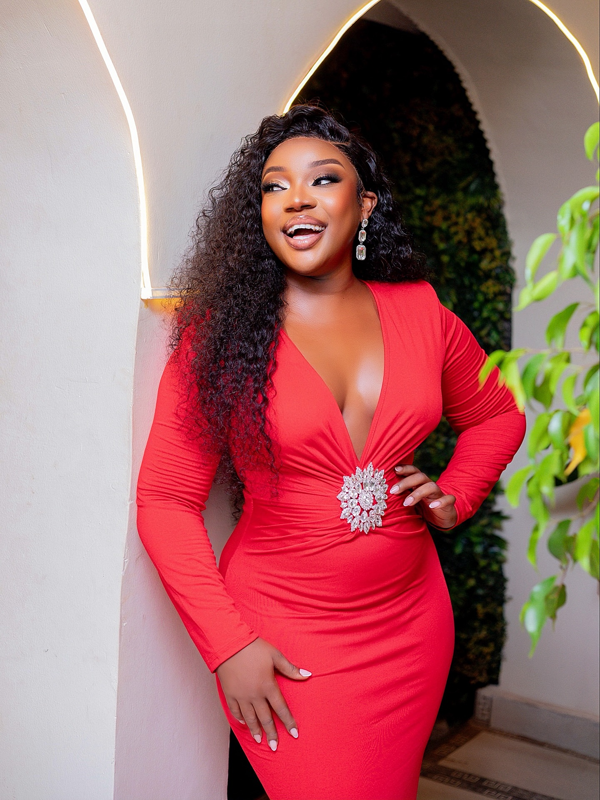

The Builder
Given a start, then built the rest herself.
Samantha Okullo opened Mirrors Unisex Salon in 2016 at 21, with early backing from her father. What followed was seven years of running the business, largely self-taught, before Mirrors grew into the flagship of a wider ecosystem — and before Lengo Organics, her own product line, was born in 2019.
She's been open about where the confidence to keep building it came from.
"He only gave it to me because he could see the vision I had. I had to prove to him that it was going to work." Samantha Okullo, on her father's early support — SatisFashion Uganda